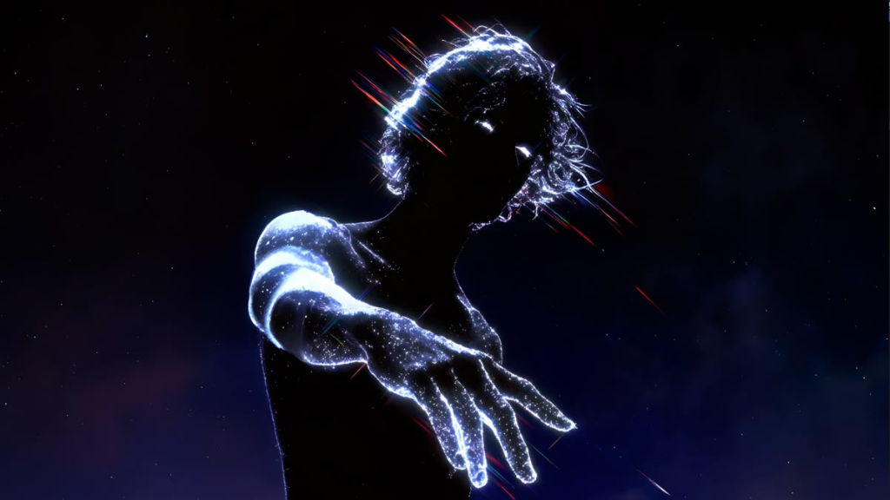
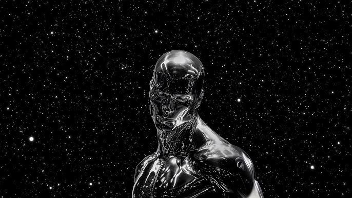
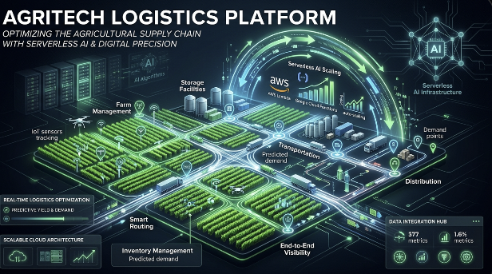

Transforming probabilistic neural models into resilient, deterministic production systems.


AUTONOMOUS ORCHESTRATION ENGINE
Bridging foundational deep learning models with zero-bloat, high-throughput cloud infrastructure.
Decentralized swarms with dynamic triage loops and automated self-healing.
Transformer visual anomaly detection with media tamper forensics.
Edge-cached inference endpoints with automated compute elasticity.
Intelligent engine turning production incidents into verified actions in real time via automated context synthesis and self-healing pipelines.
RSA-4096 asset provenance grids and deepfake forensics pipelines.

High-throughput smart routing and predictive farm inventory telemetry.
Real-time 3D synaptic vector space simulating tensor synchronization, dynamic gradient descent, and multi-agent topology.
Available for High-Impact Innovation, Autonomous AI Systems, and Scalable Cloud Architecture.